Welcome to Deep Learning Applications in Environmental Big Data. Today: what this course is, what it honestly costs, and whether it is for you — by the end of today, you will know.
Course Overview, the 2026 Foundation-Model Landscape, and AI-Native EngineeringProf. Hyunglok Kim · HydroAI Lab · GIST
Part 1 · Welcome · 0:00–0:08
What is this course about?
Right now, hundreds of satellites are watching the Earth — a typhoon organizing over the Pacific, soil drying around Gwangju, forests breathing in and out.
This course is about teaching machines to read all of it — you will learn, hands-on, roughly how such models are built, end to end.
And by December, a model you trained will be public — under your own name.
Photo: Hurricane Genevieve from the International Space Station, 2020 (NASA)
Part 1 · Welcome · 0:00–0:08
The biggest labs on Earth are racing to build exactly this
Google DeepMind — GraphCast (Science 2023) beat the world's best physics forecast on 90% of 1,380 targets, producing a 10-day global forecast in under a minute on a single chip; GenCast (Nature 2024) then beat the European ensemble on 97% of targets.
Microsoft Research — Aurora (Nature 2025): one pretrained model of the atmosphere, cheaply fine-tuned, out-forecasts the specialist systems for weather, air pollution, and ocean waves — thousands of times faster than physics pipelines.
IBM + NASA — Prithvi: NASA's first open-source foundation model, trained on NASA's own satellite archive and given away on Hugging Face — anyone in this room can fine-tune it for floods, wildfires, or crops.
Also racing: Huawei (Pangu-Weather, Nature 2023) · NVIDIA (Earth-2, a "digital twin" of the planet) · and Europe's own weather agency, whose machine-learning forecast has been fully operational since February 2025.
They are replacing weather models — and predicting disasters
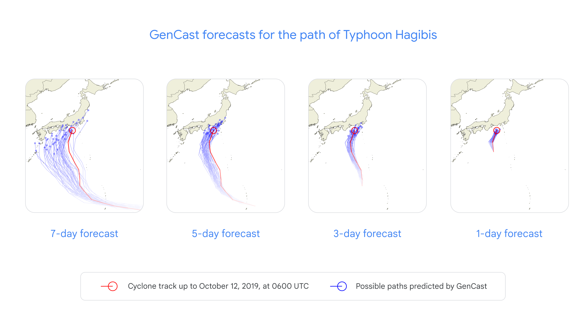
Typhoon tracks, days earlier. Left: GenCast's ensemble closing in on Typhoon Hagibis at 7, 5, 3, and 1-day lead times. Microsoft's Aurora called Typhoon Doksuri's Philippines landfall four days out — while official forecasts pointed at Taiwan.
Floods, a week ahead. Google's flood model (Nature 2024) warns up to 7 days early, even on rivers with no gauges — alerts now reach ~700 million people in 100+ countries.
This is operational, not futuristic. Europe's weather centre has run its own machine-learning forecast in daily operations since February 2025 — using about 1,000× less energy.
In this course you learn how this family of models is built — and build a small one.
environmental big data petabytes, free to download
→
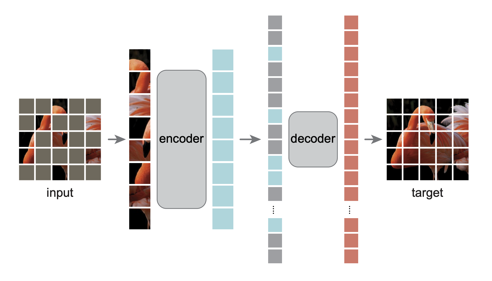
a model teaches itself pretrain · fine-tune · evaluate
→
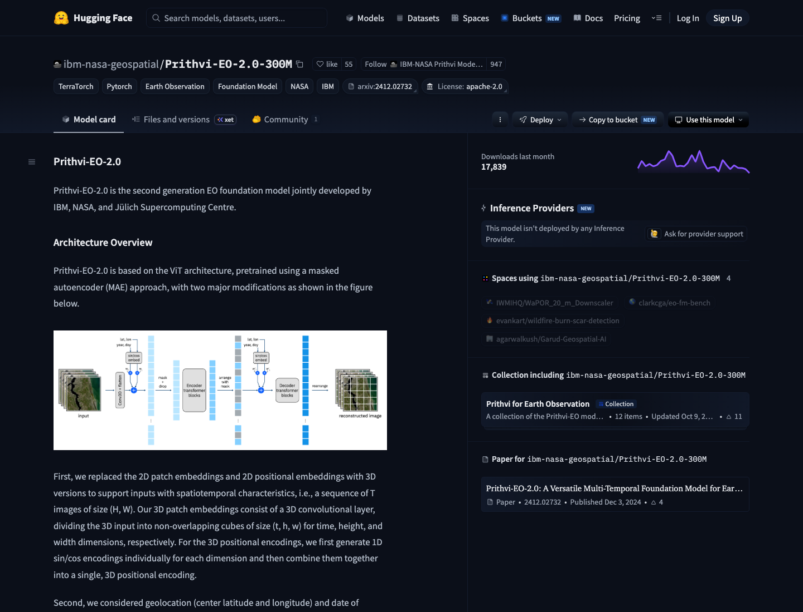
your released model GitHub + Hugging Face, your name
16 weeks: every lecture, lab, and paper moves you one arrow to the rightPhotos: NASA · figure: He et al. (Meta AI) · page: NASA + IBM's Prithvi on Hugging Face
Part 1 · Welcome · 0:00–0:08
Who you will be working with
Prof. Hyunglok Kim
Instructor · HydroAI Lab, GIST
Satellite hydrology × machine learning
Lectures, journal club, capstone advising
Door open all week — drop by any time
Yusang
Teaching assistant, HydroAI Lab
Quizzes, course site, submissions
First stop for lab and toolchain issues
Circulating in every lab session
hydroai.net · office hours posted on the course site
Part 1 · The promise · 0:00–0:08
By Week 16 you will have fine-tuned, rigorously evaluated, documented, and publicly released a foundation model — and pretrained one at lab scale with your own hands.
Today you decide whether that is what you want this semester.
Course site: syllabus, HW0, the quiz archive — everything shown today is already posted
Part 2 · 0:08–0:28 · 20 min
The syllabus, delivered calmly
Part 2 · Capstone · 6 min
The capstone: you release a model, individually
Default track for everyone — feasible on free compute (Kaggle/Colab). Building a foundation model from scratch is the HydroAI lab team's joint project.
Fine-tune a public foundation model (Prithvi, OlmoEarth, ClimaX lineage) on a real environmental task — yourself, not a team. (Everyone pretrains a mini-model in the W7/W9 labs.)
Evaluate it against honest baselines — does it really beat a tuned supervised model?
Document it: model card, ablation, limitations you actually believe.
Release weights + code publicly: GitHub and Hugging Face, under your own name.
A real released model page (NASA + IBM's Prithvi) — in December, one of these is yours.
Project = 60% of grade · proposal 11/1 → pitches 11/2 · Milestones 1–3 in December · HW0 (ungraded starter project) gets you set up
Part 2 · Capstone · 6 min
What “released” actually means — two real pages
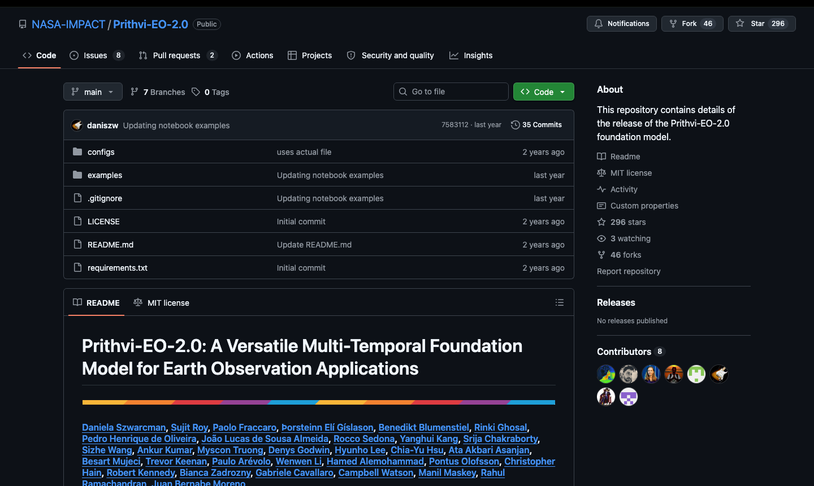
A public repository — runnable code, commit history, a license. (NASA + IBM's Prithvi repo)
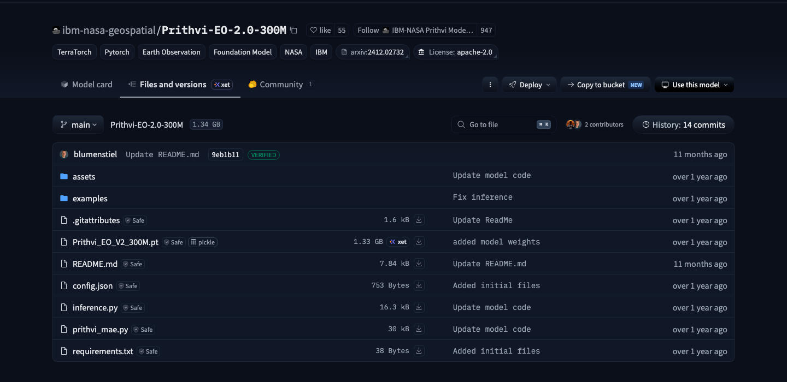
Public weights — the actual 1.33 GB weights file, downloadable by anyone on Earth.
Your artifacts, same shape: weights · model card (intended use, data, eval table, limitations) · repo runnable from a fresh clone · research notes — smaller than NASA's, but built to the same standard, with your name at the top.
Part 2 · Workload · 4 min
8–12 hours per week outside class — every week
Paper + entrance ticket (3 h) · lab follow-through + Sunday packet (2–3 h) — from Week 1.
The project hours (dashed) start near zero and ramp up after the Week 8 proposal — December weeks are nearly all project.
Including reading weeks. There are no light weeks after today.
“If your semester cannot absorb this, this course is not for you this semester — that is a scheduling fact, not a judgment.”
Part 2 · Grading · 6 min
Grading: 10 / 30 / 60
10% attendance. You are here, prepared, on time. The 3-hour session is the course — no recorded substitute.
30% paper discussion.Entrance tickets 15% — 11 opportunities (W1–7, W9–12), best 10 × 1.5%, W1 non-droppable, due Sun 13:00, written on the site’s Journal Club page (private to instructor/TA; classmates see only who submitted). Reading quizzes 6% — 10 closed-book quizzes at 13:00, pass = 2/3, best 8 × 0.75%. Discussion leadership 9% — groups reshuffle weekly; a leader and a presenter are drawn at random per group and revealed 13:00 on class day — everyone prepares, everyone serves several times.
60% project. Milestones from the W8 proposal onward; HW0 — the ungraded starter project — builds the setup everything else runs on. Breakdown next slide.
Part 2 · Grading · 6 min
Where the 60% lives
Lab portfolio 20% — research notes 12% (11 notes, best 10 × 1.2%) · book summaries 5% (theory weeks W2–7 + W9, 1 page, handwritten, strictly NO AI, best 5 of 7) · video summaries 3% (0.5 page, best 6 of 10). All due Sun 23:59.
Proposal 5% (due Sun 11/1, pitches 11/2) · Milestones 1–3, 15% (three December sprint check-ins, 5% each) · final 20% — release quality 8, report + model card 7, demo 5. A rigorously evaluated negative result can earn full marks.
Late window: tickets/notes 48 h at −25% · milestones excluded · drop allowances exist to absorb life — spend them deliberately
Part 2 · AI agents · 4 min
AI coding agents: required — and you own every line
Claude Code and Codex, in VS Code, are required tooling: every lab and the capstone assume you work alongside an agent. Today’s lab sets both up.
You are personally accountable for every line they write: what it does, why it is there, what breaks if it changes. Oral defense of any line, any time — failing a defense is treated like submitting work that is not yours.
Each substantial submission includes a short tool-use disclosure.
Agents are banned only where stated: today’s readiness check · closed-book assessments · the Oct 19 Book Check · and the handwritten book summaries — the one strictly NO-AI assignment; detected AI use zeroes all summaries and can go as far as an F.
“This is the easy part. Understanding it is the course.”
Part 3 · 0:28–0:38 · 10 min
Who should take this course — and who should not
Part 3 · 10 min
What this course actually is
Not a survey, not an intro to deep learning. A build course: 12 in-person sessions plus three async sprint weeks constructing, end to end, the skill set to pretrain and fine-tune foundation models for Earth observation and weather/climate data.
By December: a small foundation model pretrained by you, fine-tuned on a real environmental task, evaluated against honest baselines, released publicly with weights, code, and a model card under your name.
Fixed weekly rhythm: one paper + entrance ticket, one 3-hour session (quiz · lecture · 30-min journal club · 60-min lab), Sunday packet, project progress. 8–12 h outside class, every week.
Everything is public-facing: notes, labs, capstone live on Git. You are building a portfolio a PhD advisor or employer can read — a feature, and a commitment.
Part 3 · 10 min
You should take this course if…
You have real fluency in the prerequisites: linear algebra through the singular value decomposition, probability through maximum likelihood and Bayes' rule, multivariable calculus, comfortable Python/NumPy. Today’s readiness check tells you whether “fluency” is the right word — believe it either way.
You want to do research with environmental data — hydrology, remote sensing, climate, ecology — and you want the modeling skills that field now assumes, not a tour of them.
You are willing to work in public: commit history, released models, written notes. Willing to be wrong in writing and fix it in writing.
You are excited, not annoyed, that your primary engineering partner is an AI agent — and that you must be able to defend every line it writes.
One honest sentence: if the readiness check felt comfortable and HW0 sounds like a fun weekend, this course was designed for you — undergraduate or PhD student alike. The bar is preparation, not seniority.
Part 3 · 10 min
You should probably not take this course (yet) if…
The readiness check puts you below ~45, or its math sections read like a foreign language rather than rusty memory. The pace is PhD-1 from Week 2; I will not re-teach eigendecomposition or the chain rule. The gap compounds weekly — no amount of effort in November can buy back September.
Your semester genuinely cannot absorb 8–12 extra hours per week — heavy load, thesis deadline, job. A scheduling fact, not a character flaw.
You wanted a gentler on-ramp to ML. Completely legitimate — simply a different course. Take intro ML and Python first, come back next fall; you will get far more out of it.
My intent: not to talk anyone out of ambition, but to make sure this week’s decision is made with full information instead of optimism. Attempt HW0 before deciding — it is the most honest 4–8 hours of information you will get.
Whatever you decide by add/drop: decide deliberately. Both staying and leaving are respectable — drifting is not.
Part 4 · 0:38–1:18 · 40 min
The readiness check
Part 4 · Instructions · 5 min
Rules — high-school math, honestly attempted
Conditions
30 minutes · 100 points · 4 sections
Closed book. No AI tools, no phones, no internet.
Not graded — write only the last 4 digits of your student ID, no name
Papers are collected, shuffled, and graded by a classmate after the break, then returned to you
Section time budgets
A Vectors & matrices 8
B Functions & the chain rule 8
C Probability & data sense 8
D How machines learn 6(preview — common sense counts)
Everything is solvable with solid high-school math · why closed book: what is in your head is what you will lean on at 2 a.m. in November
Part 4 · Test · 30 min
Readiness check in progress
A:8 · B:8 · C:8 · D:6 minutes
Show your work — your grader gives partial credit for method. Stuck? Move on; budgets are per section for a reason.
Break · 1:18–1:28 · 10 min
Break — back in 10
Part 5 · 1:28–1:56 · 28 min
Peer grading — and what the number means
Part 5 · 28 min
The four questions worth talking about
B2 · the chain rule→ backpropagation (Week 2)
Outer × inner, multiplied backward — repeated a million times, this is how every network learns.
B3 · gradient descent→ how every model trains
Follow the slope downhill in small steps — the one idea that trains everything from HW0's model to GraphCast.
C3 · rare events→ why disaster alerts are hard
Droughts are rare, so false alarms swamp the signal — every flood and drought detector in this course fights this.
D1 · one neuron→ a foundation model, ×100 million
Multiply, add, clip at zero — middle-school arithmetic. The mystery is organization, not difficulty.
Paper + key stay on the Quizzes tab for review — study from them anytime
Part 5 · 28 min
What your number means — advisory, and worth believing
85–100 — You're ready. The course will still be demanding — but not because of the math.
65–84 — Ready, with some rust. Skim the topics you missed this week (resources on the site). You'll be fine.
45–64 — Real gaps, but fixable with a plan. Come to office hours this week — S6, room 317 — and we'll map it out together.
< 45 — Let's talk before add/drop closes, kindly and honestly. Sometimes the right move is prerequisites first, and I will help you plan either way — that path is entirely respectable.
Whatever your number: try HW0 (ungraded, due Mon 9/14) — it measures the other half of readiness, engineering follow-through
Part 6 · How a week runs · 1:56–2:02
Every teaching week has the same shape
Three fixed deadlines, every teaching week: Sun 13:00 ticket · Mon 13:00 quiz + roles reveal · Sun 23:59 packet.
The dashed boxes are yours (at home, on this site); the solid boxes are ours (in the room).
Part 6 · How a week runs · 1:56–2:02
What you submit, at a glance
What you submit
Due
Format
Which weeks
Entrance ticket (on the week's paper)
Sun 13:00
text, written on the Journal Club page
W1–7, W9–12 (W1's is due with W2's on 9/6)
Research note (your lab work)
Sun 23:59
PDF ≤ 5 MB
W1–7, W9–12
Book summary — 1 page, handwritten, no AI
Sun 23:59
scan/photo → PDF
theory weeks W2–7, W9
Video summary — 0.5 page
Sun 23:59
PDF
W2–7, W9–12
Reading quiz (nothing to submit)
Mon 13:00
in class, closed book
W2–7, W9–12
Group slides — only if drawn as presenter
in class
PDF ≤ 3 MB, Presentations tab
your drawn weeks
Exceptions: W1 orientation (zero pre-work) · W8 proposal (Sun 11/1) · 10/19 Book Check · Milestones 1–3 on 12/4, 12/9, 12/13 · final demo + release 12/16
Site tour · 2:02–2:12 · 10 min
Everything lives on the course site
Seven screens, one habit: syllabus, schedule, tickets, quizzes, submissions, feedback — all in one place. QR at the front; open it along with me.
Site tour · 1 of 7
First visit: the class gate — password hydroai!
Type it once; the browser remembers. It unlocks every page of the site.
This keeps course material class-only — do not share the password outside this room.
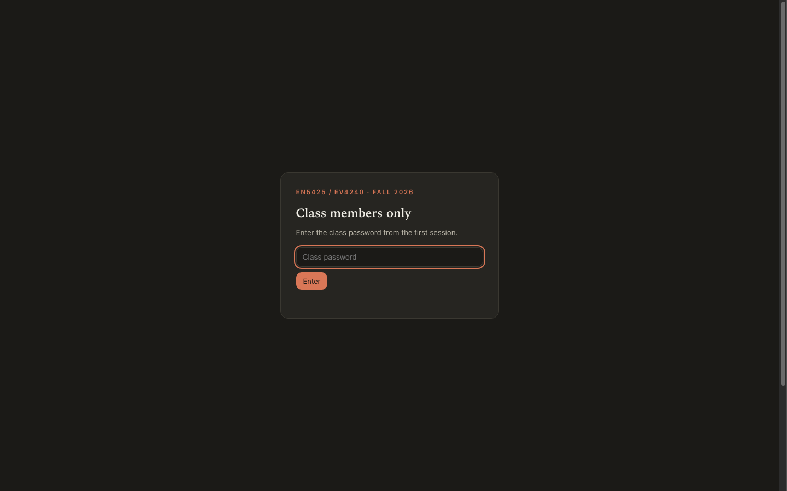
Site tour · 2 of 7
Home: your weekly starting point
Top bar shows today’s date and the current week — the site always knows where the semester is.
Announcements: read the pinned ones; anything urgent lands here first.
The this-week card links straight to the current week page — one click, everything you need.
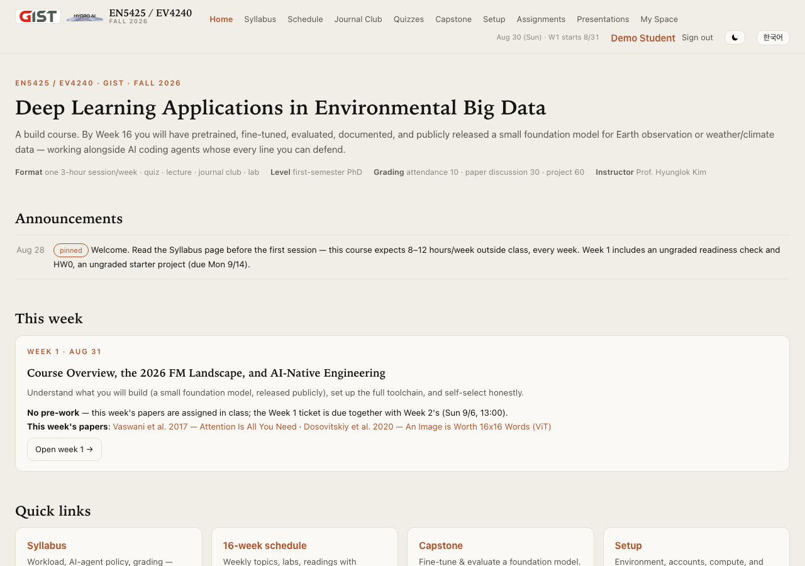
Site tour · 3 of 7
Schedule: every deadline of the semester
The weekly-deadline strip at the top is the rhythm you just saw — Sun 13:00 · Sun 23:59 · Mon 13:00.
The 16-week table: click any week number for the full plan — minute-level lecture outline, lab spec, discussion questions.
Readings and their tags (1p handwritten, 0.5p video) sit in the right column, per week.
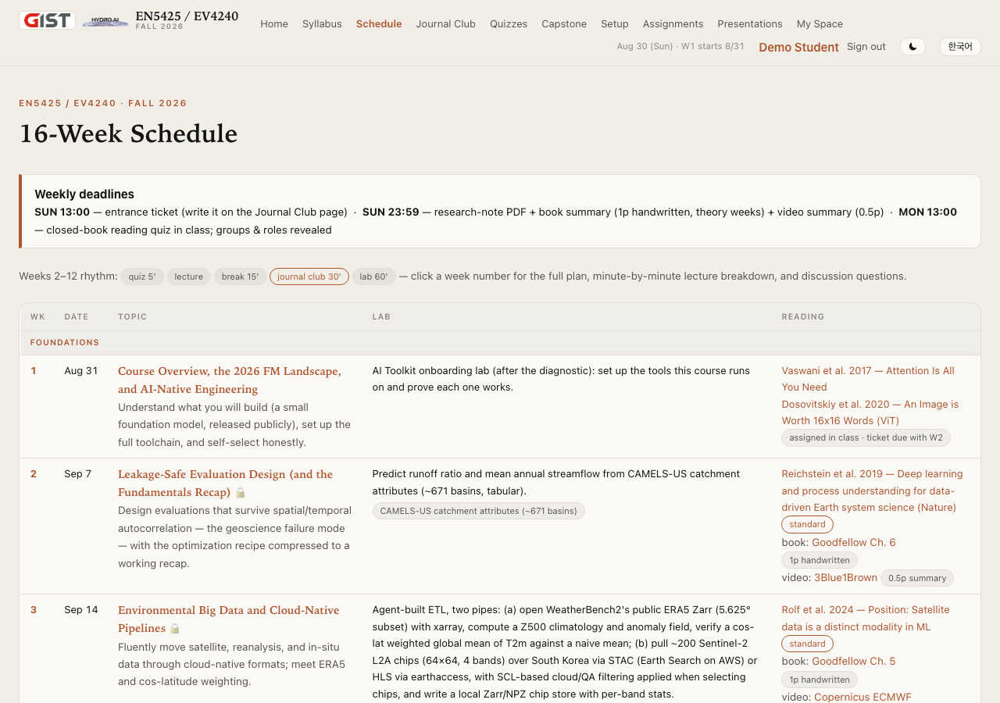
Site tour · 4 of 7
The week page: mission control
Everything for one week in one place: minute-by-minute lecture plan, lab spec, guides & videos, slides link at the top.
Submit boxes are right on the page — you submit where the work is described, no separate system.
Cold-call questions for the week are listed — read them before class; I draw from them.
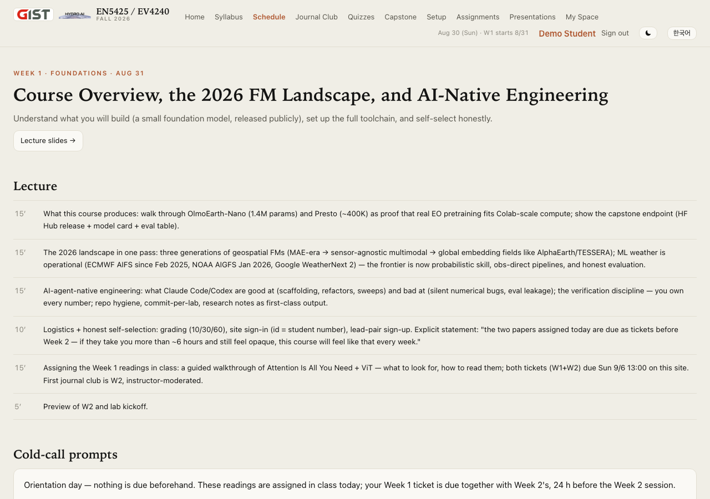
Site tour · 5 of 7
Assignments: everything due, submit in place
Every deliverable of the semester with its deadline and status — the submission counter (0 / 46) tracks you all term.
Dashed red boxes = due soon. Right now: Ticket W1, Ticket W2, AI Toolkit Report (Sun 9/6) — and HW0 with two full weeks (Mon 9/14).
Submit here or on the week page — same box, either works; resubmit freely until it is graded.
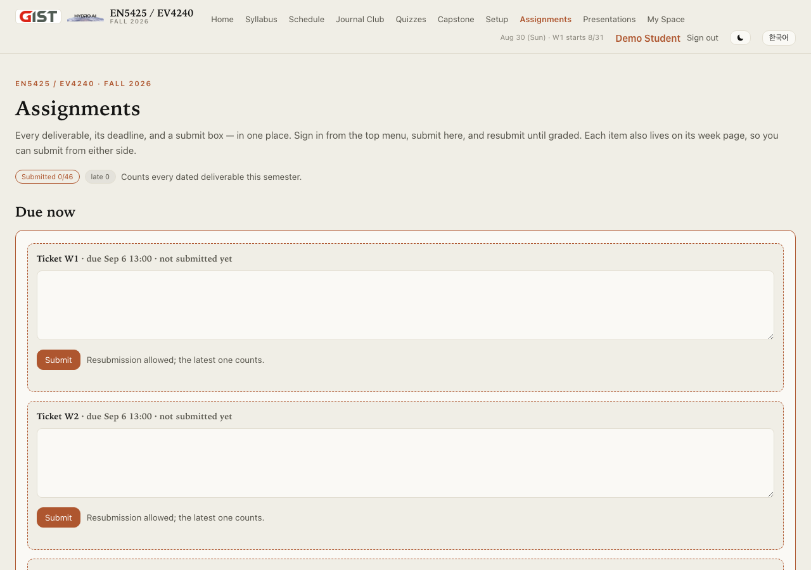
Site tour · 6 of 7
Journal Club: your ticket and the weekly draw
Write your entrance ticket here (sign in first) — content is private to instructor/TA; the prep board shows only who submitted.
Role cards: ★ leader runs the 30-min discussion · ◆ presenter reports the group’s answers — drawn at random, revealed 13:00 on class day. Everyone prepares.
The W2 accordion is already open: Reichstein 2019 + three discussion questions — your weekend reading.
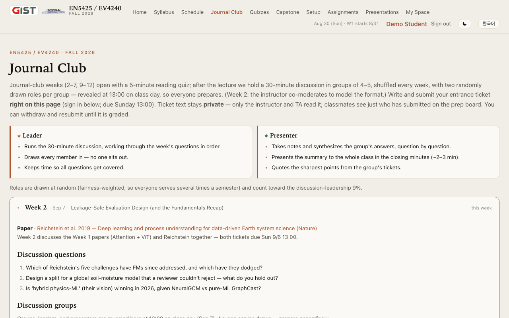
Site tour · 7 of 7
Sign in today: id = your student number
Initial password = your student number — the site forces a change on first login. Change it before you leave this room.
Signed in, you can submit, see feedback and your grades-in-progress, and use the My Space tab.
Trouble signing in? That is a Yusang question — today, during lab.
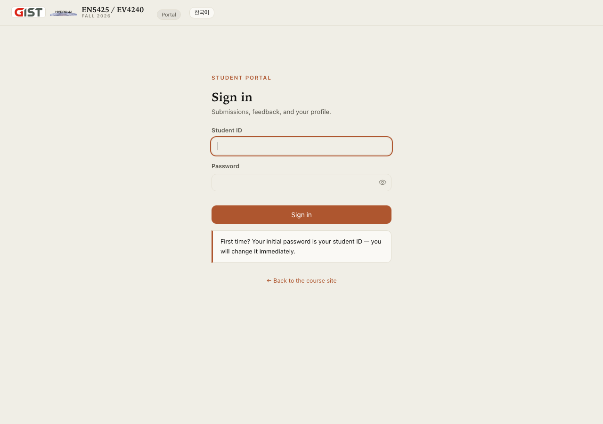
Part 8 · The 16-week arc · 2:12–2:24
Four phases, one artifact
Tensors → self-supervised pretraining → fine-tuning & honest evaluation → release engineering; models you meet along the way: the Vision Transformer, masked autoencoders, SatMAE, Presto, ClimaX, Prithvi, GraphCast, Aurora.
No class 10/5 (holiday) · 10/19 Book Check instead of lecture · W13–15 async, feedback via GitHub · W16: recorded demo + public release.
Every lab is one brick of your capstone. Miss a week and your own project stalls.
Part 8 · 2026 landscape
How these models learn: hide-and-predict, no labels needed
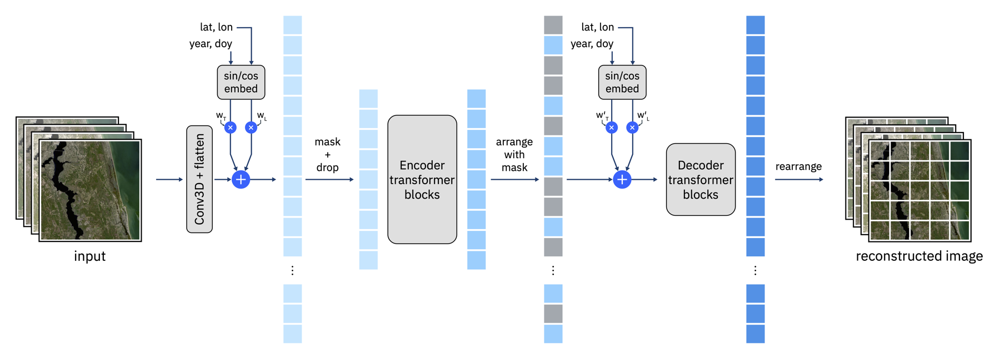
The trick: hide most of the patches in a satellite image, train the network to fill them back in. No human labels — so the entire free satellite archive becomes training data.
Do that on millions of images and the model teaches itself what fields, forests, water, and cities look like from above. A handful of labels afterward adapts it to your task — floods, crops, soil moisture.
Figure: NASA + IBM, Prithvi (the same hide-and-predict picture you saw in the opening) · you build a miniature version of this in the Week 7 lab
Part 8 · 2026 landscape
Three generations in a decade — and you arrive right on time
Generation 1 — borrow a network trained on cat photos, re-train it on scarce satellite labels. Generation 2 — hide-and-predict on the free archive (previous slide), but each model welded to one sensor. Generation 3, still being written — one model, many sensors, whole time series: a precomputed "fingerprint" for every 10-meter square on Earth, every year.
The leaderboard is wide open. A 2026 evaluation counts 89 public geospatial foundation models — and no single one dominates. What the field is missing is exactly what Weeks 9–12 train you in: honest evaluation. A careful graduate student can move this field right now.
And everything is open. NASA's weights, Google's embeddings, the code, the archives — free. Five years ago, working at this frontier took a national lab. This fall, it takes the skills in this course and the free compute you set up today.
2022 — FourCastNet (NVIDIA): first neural network at physics-model resolution; a week's forecast in 2 seconds. · 2023 — Pangu-Weather (Nature) and GraphCast (Science, above): more accurate than the best physics forecasts, at 10,000× the speed.
2024 — GenCast (Nature): beats the European ensemble on 97% of targets — probabilistic forecasting conquered. · Feb 2025 — Europe's weather centre puts its own machine-learning forecast into daily operations. · 2025 — Aurora (Nature): one pretrained atmosphere model, fine-tuned for weather, waves, and air quality.
2026 — the United States deploys a machine-learning global forecast; Google open-sources WeatherNext 2, whose cyclone-track forecasts see about one day further ahead than leading operational systems.
Figure: Google DeepMind, GraphCast — one learned step, rolled out into a 10-day global forecast · “can machine learning forecast?” is settled; the frontier is probabilistic skill and honest evaluation
Part 8 · 2026 landscape
And it fits your laptop budget: small models are real models
OlmoEarth-Nano: 1.4 million parameters — state-of-the-art against 12 much larger foundation models on most benchmark tasks. (Your phone's keyboard model is bigger.)
Presto: about 400 thousand parameters — a pixel-time-series Transformer, still competitive on real agricultural tasks.
Meaningful Earth-observation pretraining fits the free Colab and Kaggle compute you set up today. Your capstone model is these models' younger sibling — at this scale, what you do is research practice, not a toy.
OlmoEarth arXiv:2511.13655 (CVPR 2026) · Presto 2304.14065 · Nobody in this room lacks the compute — the constraint is skill and consistency
Part 8 · Journal-club preview · 2 min
Your weekend: “Attention Is All You Need” (2017) + the Vision Transformer (2020)
Why does attention scale as O(n²) in tokens, and what does that imply for a 0.25° global weather grid (721×1440)?
The Vision Transformer needs more data than convolutional networks to win — what inductive biases were traded away, and do satellite images restore any of them?
What exactly is a 'token' for a multispectral image cube?
W1 + W2 tickets both due Sun 9/6 13:00 on the Journal Club page · W2 also reads Reichstein 2019 (Nature) · first journal club is W2 — I co-moderate to model the format
Lab · 2:24–2:52 · AI Toolkit onboarding
Today’s lab: set up the five tools this course runs on
VS Code + Claude Code — install, sign in, have it explain then modify a small script.
Codex in VS Code — same exercise; compare the two agents on one refactor.
Google Colab — GPU runtime on, torch.cuda.is_available() → screenshot the True.
Kaggle — account + phone verification (unlocks the free weekly GPU quota); run one GPU notebook.
GitHub — account, SSH key, clone the course repo.
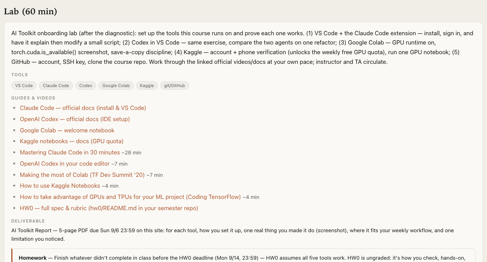
Work from here: the Week-1 page — lab spec, official guides & videos, all linked.
Goal: leave with five tools proven working — or a precise list of what is broken · finish at home before the HW0 deadline (HW0 assumes all five work) · raise a hand early, not at 2:50
All links live on the Week-1 page → Guides & videos · watch the long video at home; use the docs in the room
Lab · Deliverable
Deliverable: the AI Toolkit Report
5-page PDF · due Sun 9/6, 23:59 · submitted on this site (Week-1 page or Assignments tab). For each of the five tools: how you set it up · one real thing you made it do (with screenshot) · where it fits your weekly workflow · one limitation you noticed.
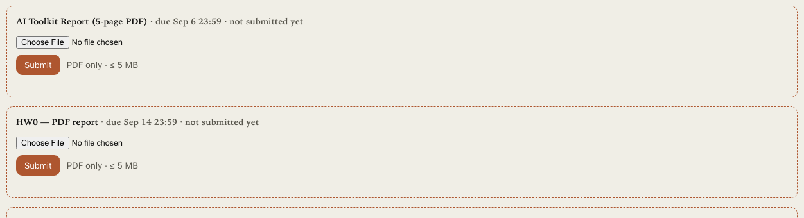
Submit right here — this exact box on the Week-1 page (sign in first) · resubmit freely until it is graded.
One page per tool; screenshots count toward the five pages. “One limitation you noticed” is the graded muscle — the same honest-observation skill a model card’s limitations section demands.
Part 9 · 2:52–3:00 · HW0
HW0: your starter project — due Mon 9/14, 23:59 (PDF on this site)
Not graded, no pass/fail. HW0 is how you check, hands-on, that you can run this course's weekly workflow — and every later lab builds on the setup it leaves behind, so everyone submits it. Think on-ramp, not exam. Designed for 4–8 relaxed hours with an AI agent.
Build: create your semester repo from the course template; train a small multi-layer perceptron (a basic neural network) on ~10,000 rows of station soil-moisture data; temporal split (train ≤2018 / val 2019 / test 2020), scaling fit on train only; beat the mean-predictor baseline.
Ship:train_mlp.py runnable from a fresh clone · metrics.json + loss curve · 1-page report.md with baselines table and an agent-accountability section · research note · ≥5 meaningful commits.
Stuck on anything? Come to S6, room 317 — the HydroAI lab. The researchers there are expecting you, and asking is exactly how this course is meant to work. HW0 is also an honest preview: if it takes far longer than 8 hours, bring that to office hours and we'll plan around it together.
Full spec + checklist: hw0/README.md in your semester repo (course template) — linked on the Week-1 page · two full weeks; going to be late? just tell me and we'll sort it out
Part 9 · Adjourn
You now have the syllabus, a readiness number, a working toolkit, and a starter project.
This Sunday, 9/6 — 13:00: tickets W1 + W2 · 23:59: AI Toolkit Report. HW0: Mon 9/14, 23:59 — start it this week; stuck means visit S6 317. All on the site you signed into today.
Decide deliberately. Both staying and leaving are respectable — drifting is not.
Office hours all week · attempt HW0 before you decide · see you (or not) in Week 2.